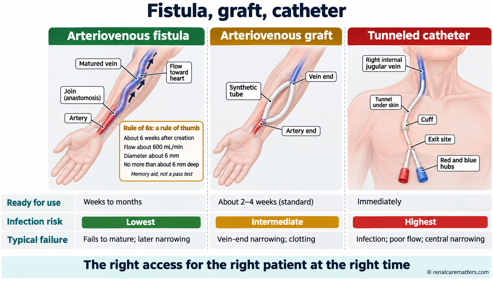
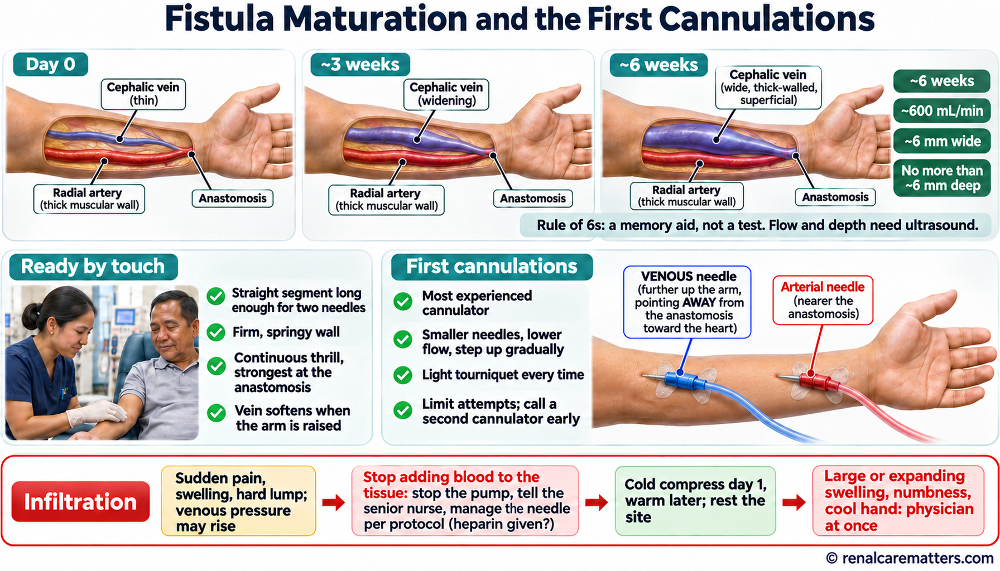
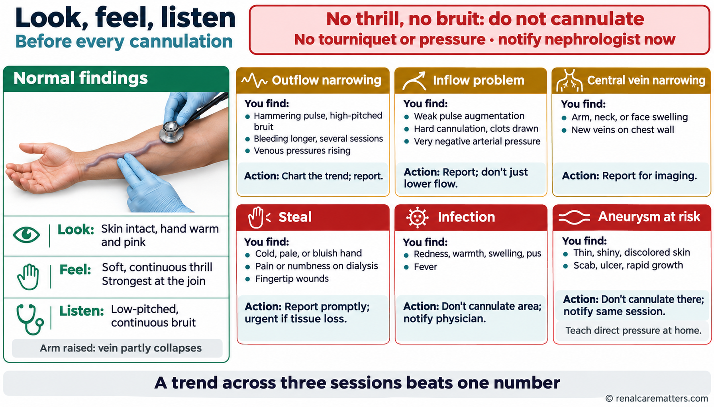
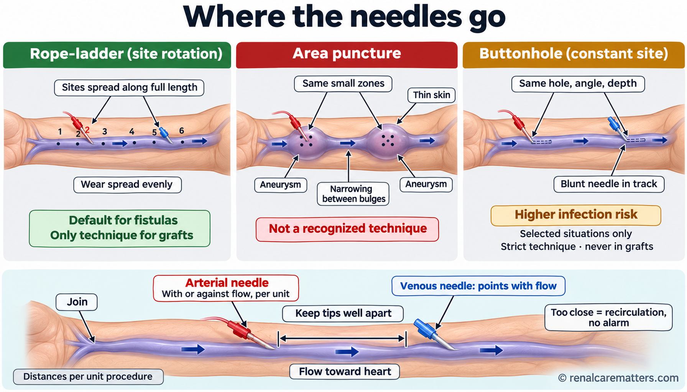
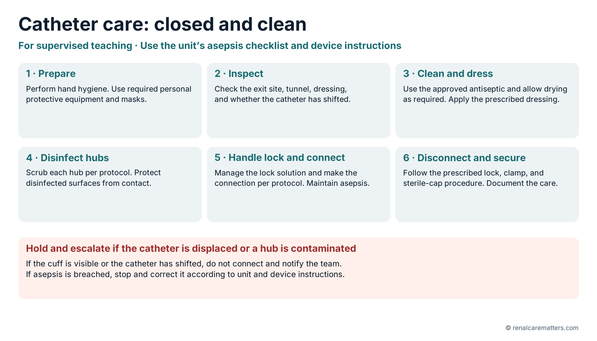
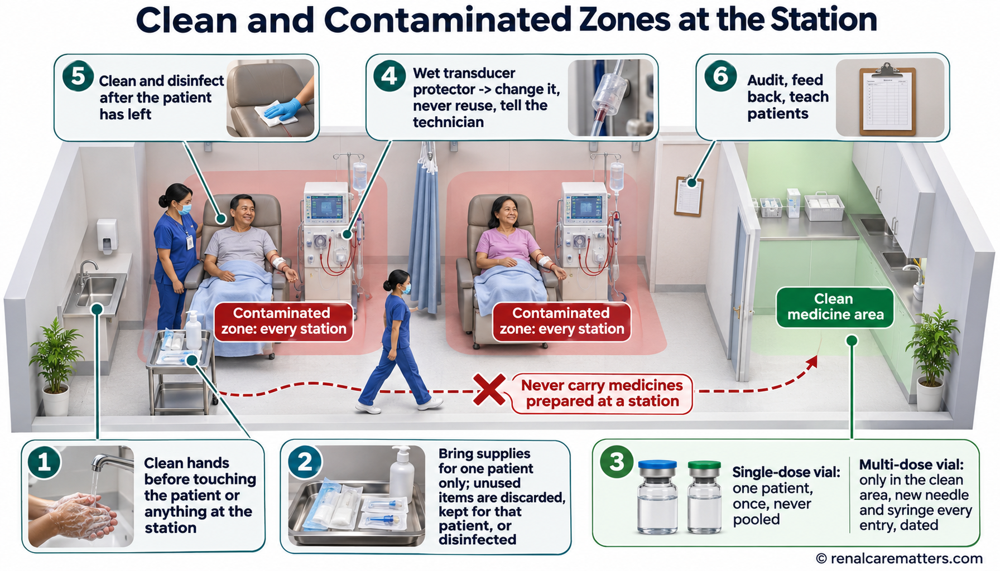
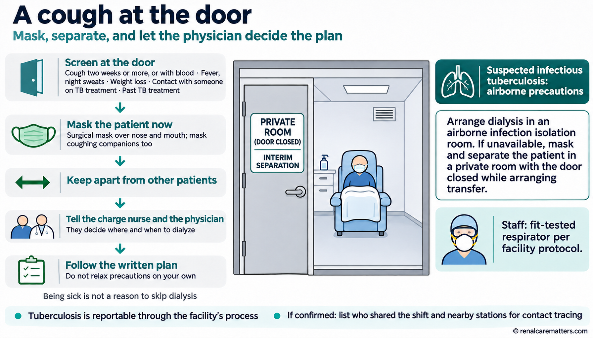
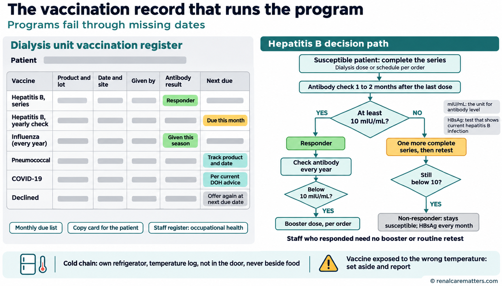
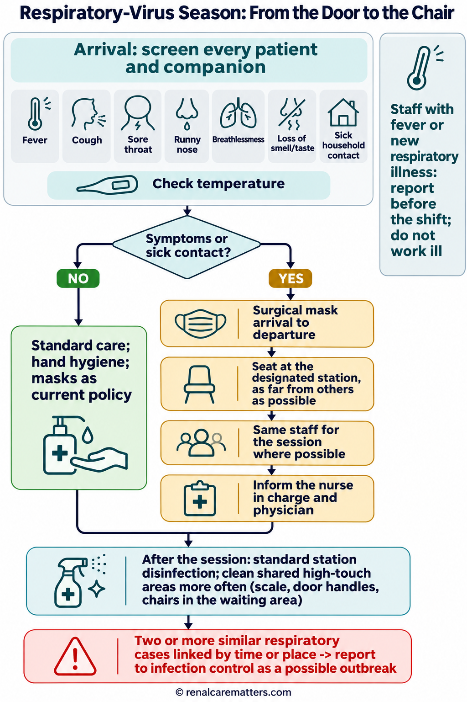
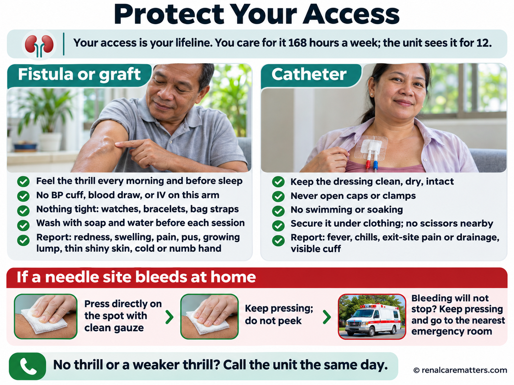

After this module you should be able to
- Compare arteriovenous fistulas, arteriovenous grafts, and central venous catheters.
- Examine an access by looking, listening, and feeling, and recognize findings that mean it should not be used.
- Protect veins for future access in every patient with kidney disease.
- Apply aseptic technique for cannulation and for catheter connection, including correction of contamination.
- Describe station disinfection, injection safety, and precautions for hepatitis B.
- Keep needle sites and bloodline connections visible throughout treatment.
- Judge whether a new fistula is ready for use and describe safe first cannulations and the response to infiltration.
- Relate physical findings and treatment trends to inflow, outflow, central vein, steal, infection, and aneurysm problems.
- Recognize and escalate suspected catheter-related bloodstream infection and catheter dysfunction.
- Describe the unit-wide infection-control and blood-borne virus program, including the response to staff exposure, and teach patients to protect their access.
- Recognize the higher risk and often atypical presentation of tuberculosis in patients on hemodialysis, and apply symptom screening, cough triage, masking, separation, and reporting in an open dialysis unit.
- Run the unit vaccination program for patients and staff, including hepatitis B antibody follow-up, yearly influenza vaccine, pneumococcal and coronavirus disease 2019 (COVID-19) vaccines, and a recording and recall system.
- Apply respiratory-virus season measures in the unit, recognize a possible outbreak, and report it through the infection-control system.
A lifeline with a limited supply
Picture a well that a family draws from every day. It can be dug in only a few places on the land. Each time one silts up, the family must dig somewhere else, and the good places run out. A hemodialysis (HD) access is that well. The machine needs about a third of a liter of blood every minute, three times a week, for years. Ordinary veins cannot give that.
The picture has a limit. A well is just a hole, and an access is living tissue. A fistula vein remodels, scars at each needle hole, narrows where flow is disturbed, and can clot within hours. It can also carry bacteria straight into the bloodstream. So the access is not only scarce. It changes, and it can fail or become infected between one session and the next.
Three habits follow. Examine the access before every use, because a problem found early can often be repaired. Protect veins that are not yet needed, because they are tomorrow’s access. Treat every connection as a door into the bloodstream, because infection is a leading cause of hospital admission and death in people on dialysis.
Most of your access work is routine and safe. A few findings mean the access must not be used today. Your work is to examine before you needle, to stop when a finding says stop, and to keep every connection clean.
Fistula, graft, catheter
An arteriovenous fistula (AVF) is a surgical join between an artery and a vein. Arterial pressure and flow then reach a vein that normally carries slow, low-pressure blood. Over weeks to months the vein widens and its wall thickens. This is maturation. At the end of it the vein can take two needles, session after session.
An arteriovenous graft (AVG) bridges the artery and vein with a synthetic tube. It can be used sooner. It narrows and clots more often, usually where the tube joins the vein, and it carries a higher infection risk.
A central venous catheter (CVC) is a tube placed in a large central vein, usually tunneled under the skin with a cuff. It works at once. It also has the highest rate of bloodstream infection (BSI), and it can scar the central veins that every future arm access will drain into.
| Fistula | Graft | Tunneled catheter | |
|---|---|---|---|
| Ready for use | Weeks to months | About 2 to 4 weeks for standard grafts | Immediately |
| Infection risk | Lowest | Intermediate | Highest |
| Typical failure | Fails to mature; later narrowing | Narrowing at the vein end; clotting | Infection; poor flow; central vein narrowing |
Flow through a working fistula or graft is fast and continuous. That flow makes a vibration you can feel, the thrill, and a sound you can hear with a stethoscope, the bruit. Your fingers and stethoscope are reading the flow.
| What is happening to flow | What you feel | What you hear |
|---|---|---|
| Free, continuous flow | A soft, continuous thrill | A low-pitched bruit through the whole heartbeat |
| A narrowing downstream holds blood back | A hard, pounding pulse in place of the thrill | A high-pitched bruit, or one heard only in systole |
| No flow: the access has likely clotted | No thrill | No bruit |
The thrill and bruit tell you about flow. Feel and listen before every cannulation, and compare with what you found last time.

Maturation, readiness, and the first cannulations
A new fistula is a vein being asked to behave like an artery. Once the join is made, flow through the vein rises many times over. The vein answers by widening and thickening its wall. The feeding artery enlarges too. A fistula is mature when the vein is wide enough to take two needles, close enough to the skin to be found, straight enough to give a usable length, tough enough to seal after puncture, and carrying enough flow to supply the blood pump. Many fistulas never reach this point without help. That is why a new fistula is examined at each visit, long before anyone plans to needle it.
The “rule of 6s.” A widely taught rule of thumb, inherited from earlier guideline editions, describes a fistula that is likely to be usable. At about 6 weeks after creation it has a flow of about 600 mL/min, a diameter of about 6 mm, and lies no more than about 6 mm below the skin. The numbers are an aid to memory, not a test the access must pass. Flow and depth can only be measured by ultrasound. The most useful part of the rule is the time point. A fistula that looks or feels unpromising at about 6 weeks goes back to the surgeon or access team then, while the problem can still be corrected. It is not left for months on a catheter.
What readiness feels like. With a light tourniquet, you can see or feel the vein over a straight segment long enough for two needles. The wall feels firm and springy. The thrill is continuous and strongest at the join. The vein softens when the arm is raised. The decision to begin cannulation is made by the nephrologist or surgeon together with an experienced access nurse, and it is written in the record.
First cannulations carry the highest risk of damage, because the wall is still thin. Units lower that risk in similar ways, each set out in their own procedure:
- The most experienced cannulator available performs the first several attempts.
- Smaller needles and a lower blood flow are used at first, and increased stepwise over the following sessions as the access tolerates them.
- Some units begin with one needle in the fistula for blood withdrawal and return through the existing catheter.
- A tourniquet is used for every fistula cannulation, applied lightly.
- The number of attempts by one nurse is limited, and a second cannulator is called early.
Infiltration means the needle tip has passed out of the vessel and blood is entering the tissue. You see sudden pain, swelling, or a hardening lump at the site, often with a rise in venous pressure if the venous needle is involved. The rule is to stop adding blood to the tissue. Stop the pump, tell the senior nurse, and manage the needle as the unit protocol directs, taking into account whether heparin has already been given. Common practice is a cold compress on the first day to limit the bleed, and warm compresses on later days to help it clear. The access is rested, or needled well away from the bruise, until swelling settles. Report a large or rapidly expanding swelling, numbness, or a cool hand to the physician at once. Tell the patient what happened and what to watch for at home. An unexplained painful arm destroys trust in the next cannulation.
A thrill shows flow, not readiness. Readiness is a joint decision, written in the record.

Physical examination in depth: finding the problem before it closes the access
Picture the access as a garden hose with a tap at one end, the artery, and a drain at the other, the veins leading to the heart. A partly closed tap gives a limp hose with weak flow. A partly blocked drain gives a tense, pounding hose. Most of the examination is deciding which of the two the access resembles.
The picture has a limit. A hose has one tap and one drain. A fistula can narrow at the join, along its length, or far upstream in a central vein near the heart. Narrowings can also sit at more than one place at once. So you examine the whole path, from the hand to the face. The vascular access guideline supports regular examination by trained staff as the main way of finding a failing access.1
Inspection. Compare both arms. Look along the whole access and up to the shoulder, neck, chest wall, and face for swelling and for visible veins that were not there before. Look at the skin over every needle area for thinning, shine, loss of pigment, scabs that do not heal, and ulcers. Look at the hand for color, wounds, and wasting.
Palpation. A healthy fistula is soft and easy to compress. Its thrill is continuous, strongest at the join, and fades upward. A narrowing changes the feel in a predictable way. Below it, the vessel is tense and the thrill gives way to a forceful, hammering pulse. Directly over it, you may feel a short, localized thrill. Above it, the vessel is softer.
Auscultation. The normal bruit is low-pitched and continuous through systole and diastole. Over a narrowing it becomes higher-pitched and may be heard only in systole.
Two simple bedside tests for fistulas, done by staff trained in them:
- Arm elevation. Raise the arm above the level of the heart. A normal fistula collapses, at least partly, because blood drains freely. If the vein stays distended up to a certain point and collapses only beyond it, the outflow is narrowed at that point.
- Pulse augmentation. Briefly compress the fistula with one finger some distance above the join. With the other hand, feel the segment between your finger and the join. With good inflow, the pulse there becomes clearly stronger. A weak or absent increase suggests a problem on the inflow side: the artery, the join, or the first part of the vein.
Do neither test on an access whose thrill has newly disappeared. That access is not compressed, and the finding is reported at once. Elevation tells you nothing in a graft, which does not collapse.
| Finding | Likely problem | Action |
|---|---|---|
| Bleeding after needle removal that takes clearly longer than the patient’s usual, over more than one session | Outflow narrowing raising pressure in the access; or excess anticoagulant | Report; review anticoagulant dose and stop time with the physician; request access review |
| Venous pressures rising from session to session at the same needle size and blood flow | Outflow narrowing | Chart the trend, not single values; report for access review |
| Difficult cannulation, clots drawn back, very negative arterial pressure, unable to reach ordered flow | Inflow problem or narrowing within the access | Report; do not compensate indefinitely with lower flow |
| Swelling of the whole arm, shoulder, breast, neck, or face; new veins across the chest wall or shoulder | Narrowing of a central vein, often after earlier catheters | Report for imaging; measure and record arm circumference if unit practice |
| Cold, pale, or bluish hand; pain or numbness, worse during dialysis; fingertip wounds | Steal: the access diverts blood away from the hand | Report promptly; rest pain, weakness, or tissue loss needs urgent surgical review |
| Redness, warmth, tenderness, swelling, or pus; fever | Access infection; in a graft this can involve the whole graft | Do not cannulate the area; notify the physician; cultures as ordered |
| Aneurysm with thin, shiny, or discolored skin, a scab or ulcer, or rapid enlargement | Skin about to break down over a high-pressure vessel; risk of sudden, life-threatening bleeding | Do not cannulate there; notify the nephrologist the same session for urgent surgical referral; teach the patient and family direct pressure and how to call for help |
Write findings so that the next nurse can compare: where on the access, what you felt and heard, and what has changed. A trend across three sessions is worth more than one alarming number.1
You are the person who sees the access every session. Chart the trend, and report it before the access closes.

What guidelines and data support
The Kidney Disease Outcomes Quality Initiative (KDOQI) 2019 vascular access guideline replaced the older “fistula first” rule with an individualized life-plan. The aim is the right access for the right patient at the right time, with a plan for the next access before the current one fails.1 It still favors a fistula or graft over a catheter for most patients, because of the lower infection risk. It supports a physical examination of the access by trained staff before each cannulation. Most of these statements rest on observational data and expert opinion, not on randomized trials, and the guideline grades them accordingly.
For infection prevention, the most useful practical evidence comes from a collaborative coordinated by the Centers for Disease Control and Prevention (CDC). Seventeen United States outpatient units adopted a package of practices: surveillance with feedback of infection rates to staff, hand-hygiene and access-care audits, staff training and competency checks, and chlorhexidine for catheter exit-site care. Access-related BSI fell from 0.73 to 0.42 events per 100 patient-months, a modeled fall of 54%, over 15 months.2 This was a quality improvement project with no control group, in units that volunteered, so some of the fall may reflect other changes. The practices carry little risk, and the direction was consistent.
For blood-borne viruses, CDC recommends that patients positive for hepatitis B surface antigen (HBsAg) be dialyzed in a separate room with a dedicated machine, equipment, and supplies. Staff caring for them should not care for susceptible patients at the same time, and their dialyzers are not reused.3 The reason is physical. The hepatitis B virus (HBV) circulates in blood at high concentration and survives on surfaces for days. For hepatitis C virus (HCV), Kidney Disease: Improving Global Outcomes (KDIGO) recommends strict standard infection-control practice and does not recommend isolation or dedicated machines.4 The Philippine Society of Nephrology (PSN) 2024 guidance is consistent with both positions, and the Department of Health (DOH) licensing order sets the local facility requirements.5,6
Know which practices rest on trials and which rest on experience. Follow both, and overstate neither.
Examine, protect, connect cleanly, keep it visible
Look, listen, feel, before every cannulation. Look for redness, swelling, drainage, thin or shiny skin over an aneurysm, and a cold or pale hand. Listen for the bruit along the access. Feel for the thrill from the join upward. A newly absent thrill and bruit is urgent. Do not cannulate. Do not apply a tourniquet or pressure “to check.” Notify the nephrologist promptly, because a clotted access can sometimes be saved only within a short window. Signs of infection, a rapidly enlarging aneurysm, or bleeding from the skin over the access also mean the access is not used until it has been reviewed.
Protect veins. In any patient with advanced kidney disease, keep blood draws, intravenous cannulas, and blood pressure cuffs off the access arm. Where you can, use veins on the back of the hand in patients who may need an access later. Peripherally inserted central catheters and subclavian lines are avoided for the same reason.1
Cannulate with asepsis. Ask the patient to wash the access arm with soap and water. Clean your hands and put on clean gloves, a mask, and eye protection as personal protective equipment (PPE). Apply the skin antiseptic and let it dry for the full contact time. Do not touch the site again after preparation. Rotate needle sites along the length of the access unless a different technique has been prescribed.
Connect catheters with a closed, clean technique. You and the patient both wear masks. Scrub each hub with antiseptic for the time your procedure sets, before opening and again before connecting. Never leave an open hub exposed to air. If a hub or connector tip touches a non-sterile surface, stop. Do not connect. Clamp, scrub the hub again or replace the contaminated part as your procedure directs, and then proceed. Reporting the event is part of the correction. It is not an admission of failure.
Keep the access visible. Needle sites and line connections stay uncovered by blankets or clothing for the whole treatment, so that bleeding or a dislodged needle is seen at once. Module 9 returns to this.
Disinfect the station. Clean and disinfect the chair, the machine surfaces, and anything touched after the previous patient has left the station. Prepare medicines in a clean area away from stations. Use single-dose vials once. Do not return supplies taken to a station to common stock.3
Before every needle and every connection, ask two questions. Can this access be used today? Is everything that touches it clean?
Cannulation technique: where the needles go and why
Every needle leaves a small hole that heals with scar. Where those holes go over months and years decides whether the vein stays an even tube, or becomes weak, ballooned segments separated by narrowings.
| Technique | What it is | Consequences |
|---|---|---|
| Rope-ladder (site rotation) | Each session’s needles are placed a short distance from the last, working along the full usable length and then starting again | Spreads wear evenly. The default technique for fistulas and the only acceptable one for grafts1 |
| Area puncture (“one-site-itis”) | Needles repeatedly placed in the same small zones, usually because they are easy and less painful | The wall weakens and balloons into aneurysms; the overlying skin thins; narrowings form between the bulges. Not a recognized technique, but the commonest pattern in practice |
| Buttonhole (constant site) | The identical hole, angle, and depth each time, creating a track later entered with a blunt needle after the scab is removed | Associated with a higher rate of access infection. The guideline limits it to selected situations, such as a very short usable segment or self-cannulation, with strict technique; never used in grafts1 |
Patients often ask for “the usual spot,” because scarred skin hurts less. Explain, with the patient’s own arm as the picture, that the comfortable spot is the one being worn out. That explanation is part of cannulation. A simple site diagram in the record helps every nurse continue the rotation.
Needle direction and spacing. The venous (return) needle always points with the blood flow, toward the heart, so that returned blood is carried away. The arterial needle may point with or against the flow, according to unit practice. What matters is that it sits upstream of the venous needle and far enough from the join. Keep the two tips well apart. Blood returned too close to the arterial needle is drawn straight back into the circuit and dialyzed again. This is recirculation. It lowers the delivered dose, and no alarm tells you. The minimum distances are those in the unit procedure.
Tourniquet. A light tourniquet distends and steadies a fistula for cannulation. Release it once the needles are in place, as the unit procedure directs. Do not use one on a graft, which does not distend and can be damaged or clotted by compression.
Securing. Tape needles in the unit’s standard pattern, so that a pull on the line is taken by the tape and not by the needle. Loop and anchor the lines with enough slack for the patient to move. Tighten connections by hand and check them. Every nurse uses the same method, so that a missing piece of tape is noticed. This, with a visible site, is the main defense against needle dislodgement, because machine alarms cannot be relied on to detect it.7
Hemostasis after needle removal. The order matters:
- Withdraw the needle completely, at the angle it went in, before any pressure is applied. Pressing while the needle is still in the vessel drags the cutting edge across the wall.
- Apply pressure with two fingers, covering both the hole in the skin and the hole in the vessel. The vessel hole lies slightly further along the needle track.
- Press firmly enough to stop bleeding but lightly enough that you can still feel a thrill above and below your fingers. Pressure that stops flow can clot the access.
- Hold steadily for the time in the unit procedure without lifting to look, then check and dress. Remove and control one needle at a time, unless the patient or a second person holds the other site.
Mechanical clamps apply a pressure nobody can feel. Avoid them where possible, particularly on new accesses and grafts. If the unit permits them, check the thrill while the clamp is on, and do not leave the patient unobserved. Never wrap a dressing tightly around the whole arm. Bleeding that restarts, or that regularly takes much longer than that patient’s norm, is an access finding. Document it and report it.
Rotate the sites, keep the tips apart, tape the same way every time, and press only as hard as the thrill allows.

Catheters in depth: care, dysfunction, and infection
| Non-tunneled catheter | Tunneled cuffed catheter | |
|---|---|---|
| Design | Enters the vein directly at the skin puncture | Runs under the skin for several centimeters before entering the vein; a fabric cuff in the tunnel becomes anchored by tissue |
| Intended use | Short-term, usually for inpatients starting dialysis urgently | Weeks to months, as a bridge to a fistula or graft, or longer when no other access is possible |
| Main risks | Infection rises quickly with time; dislodgement; bleeding | Bloodstream infection, clot and fibrin sheath, central vein narrowing |
Site. The right internal jugular vein is preferred, because it gives the straightest path to the heart. The subclavian vein is avoided. Catheters there are strongly associated with narrowing of the vein, and a narrowed subclavian vein can make every future fistula or graft in that arm unusable.1 Femoral catheters restrict walking, are generally short-term, and are watched closely for infection.
Exit-site care. At each session, with you and the patient masked, remove the old dressing and inspect the site. Look for redness, crusting, drainage, tenderness along the tunnel, and any visible cuff. Clean the skin with the unit’s antiseptic, let it dry, and cover it with a sterile dressing. The unit policy states whether an antimicrobial ointment or impregnated dressing is applied. Report a cuff that has become visible, a catheter that has moved outward, or a missing suture on a non-tunneled catheter before the catheter is used.
Hubs, caps, and locks. Organisms reach the blood mainly through the inside of the catheter. They are carried in on hubs and connectors. That is why hub disinfection matters more than anything done to the skin. Between sessions each limb is filled with a locking solution, such as heparin or citrate, chosen by order. Withdraw and discard the lock before use, as the procedure directs. At the end, instill exactly the volume printed on each limb. Overfilling pushes anticoagulant into the patient. The catheter is for dialysis only. Other teams do not use it for blood sampling, infusions, or medicines, except in an emergency or on the nephrologist’s order. Teach patients to say so when admitted elsewhere.
Poor flow. Start with what is outside the patient: clamps, kinks under the dressing, and the patient’s position. Turning the head, coughing, or lying flatter can move the tip away from the vein wall. If blood cannot be withdrawn easily, do not flush the limb forcefully, because that can dislodge clot. Reversing the limbs raises recirculation and lowers the delivered dose. Do it only if unit policy allows, as a temporary measure, and document and report it. Report persistent poor flow, so that the physician can order a thrombolytic lock, imaging, or catheter exchange.
Recognizing catheter-related BSI. The classic story is fever or shaking chills that begin during dialysis or soon after. Organisms growing inside the catheter are flushed into the circulation as the catheter is used. Older and diabetic patients may show only low blood pressure, confusion, vomiting, or feeling unwell. The exit site often looks normal. When a catheter patient has fever or chills:
- Take a full set of vital signs and assess the exit site and tunnel.
- Notify the physician during the session. Chills in a patient with a catheter are a possible bloodstream infection until shown otherwise. They are not blamed on the air conditioning.
- Draw blood cultures as ordered before the first antibiotic dose, from the sites the unit protocol specifies.
- Do not send the patient home without a medical decision. Give clear instructions on what should bring the patient back at once.
- In the following weeks, report new back pain, a new heart murmur, joint swelling, or persistent fever. These can mean the infection has seeded the spine, heart valves, or joints.
Catheter reduction is a unit goal. Lowering the number of patients who dialyze through catheters was one of the core practices in the CDC collaborative, and the access guideline asks that each catheter have a plan for what replaces it.2,1 You keep the question alive. Which patients have a catheter? Has a fistula or graft been planned? Who is waiting for surgery, and what is delaying it? In the Philippines the delay is often the cost of the operation.
Chills in a patient with a catheter are a bloodstream infection until proven otherwise. Call during the session, and cultures come before antibiotics.

The unit infection-control program
A dialysis unit is unusual among outpatient settings. Many patients sit in one room with open access to the bloodstream. Staff move between stations for hours. Blood contaminates surfaces that look clean. For these reasons dialysis-specific precautions go further than standard precautions.3
Hand hygiene and gloves. Clean your hands before you touch a patient or anything at the station. Clean them before every aseptic task: cannulation, catheter connection, injection into the circuit. Clean them after contact with blood or body fluid, after touching the patient, after touching the machine or other surfaces at the station, and after removing gloves. Wear gloves whenever you touch the patient or the equipment at the station. Remove them, and clean your hands, before you move to another patient or station, and when you move from a dirty task to a clean one at the same patient. Silencing a machine alarm and then handling a catheter hub is that kind of move. Gloves that have touched one station never touch a shared keyboard, chart, telephone, or supply cart.3
Clean and dirty zones. Treat each station as contaminated. Bring supplies to the station for one patient. Discard unused items, keep them for that patient only, or disinfect them before they return to a clean area. Draw up medicines in a designated clean area away from stations, and carry them to one patient at a time. Do not move common carts from station to station to deliver medicines or supplies, and do not carry medicines in pockets. Blood samples and used items travel to a separate dirty area.3
Vials. A single-dose vial is used for one patient, once, and leftover contents are not pooled. If a multi-dose vial must be used, keep it and enter it only in the clean medicine area, with a new needle and new syringe for every entry. Date it and discard it as policy requires. It never goes to a station.3
Machine and environment. Change external pressure-line protectors if they become wet, and do not reuse them. A wet protector means blood may have reached the machine’s internal sensor, so tell the technician. After each treatment, once the patient has left, clean and then disinfect all surfaces of the chair and machine, including the front panel, clamps, and waste container, for the contact time on the product label. Remove visible blood first, because disinfectant does not work through it.3
Audit, feedback, and patients. The units in the CDC collaborative did not rely on policy alone. They counted infections, observed hand hygiene and access care, fed the results back to staff, and taught patients about access care and signs of infection.2 A patient who has been told that everyone should clean their hands before touching the access is an extra observer at every session. Welcome the reminder.
Blood-borne virus program. The isolation rules were given earlier in this module. The surveillance that makes them work is set out in the CDC recommendations and adapted locally:
| Element | CDC recommendation | Your role |
|---|---|---|
| Testing on entry | HBV markers and HCV antibody for every patient before or at the first treatment3 | Confirm results are on file and the station assignment matches them; a patient with unknown status is managed as the unit policy directs until results are available |
| Hepatitis B vaccination | All susceptible patients and staff; antibody response checked after the series; in patients, antibody level rechecked yearly and a booster given if it has fallen below the protective level3 | Track due dates; the dialysis dose and schedule differ from the usual adult regimen and follow the product and the order |
| Routine retesting | HBsAg monthly in susceptible patients; HCV antibody every 6 months in previously negative patients3,4 | Follow the unit schedule, which reflects PSN and DOH requirements; chase missing results5,6 |
| Travel and transfers | Current serology accompanies the patient | Check results before a visiting patient is assigned a machine |
Human immunodeficiency virus (HIV) status does not change machine assignment. Standard dialysis precautions apply, and testing follows unit policy and Philippine consent requirements.
Seroconversion means a patient who was negative becomes positive for HBV or HCV. In a dialysis unit it is a sentinel event, because transmission within the unit must be assumed until it is excluded. If you see the result, notify the nephrologist and the infection-control officer the same day. The unit then reviews practices, machine and station history, and the results of patients who shared the shift.3,4
Staff exposure. After a needlestick, or a splash of blood to the eyes, mouth, or broken skin, wash the wound with soap and water or flush the mucous membrane with water. Do not squeeze it or apply caustic agents. Tell the charge nurse immediately. Go through the hospital’s post-exposure pathway the same shift, because protective treatment is time-sensitive. The source patient’s status is checked through that pathway, not informally. Reporting protects your health and entitlements, and it shows the unit where its sharps handling is failing.
Assume every surface at a station carries blood. Clean hands and gloves between every patient and every task, and report every seroconversion and every exposure the same day.

Tuberculosis in the dialysis unit
The blood-borne viruses earlier in this module travel through blood and contaminated surfaces. Tuberculosis travels through the air. A person with infectious lung or throat disease releases tiny droplets when coughing, sneezing, singing, or talking. Those droplets can stay suspended in a room for a long time. Now picture a dialysis unit: many patients sitting near one another for four hours, several times a week, for years. One undiagnosed case can expose many people.
Why patients on dialysis are at higher risk. Kidney failure weakens the part of the immune system that keeps tuberculosis in check. Malnutrition, diabetes, older age, and crowded living conditions add to the risk. Many patients were infected in the past, often without knowing it, and can develop active disease when their immunity falls. A review of the evidence concluded that patients on dialysis and transplant recipients appear to have a higher risk of tuberculosis than the general population, and that screening and diagnostic tests perform less well in them.8 The Philippines has one of the highest tuberculosis burdens in the world. A Filipino patient on dialysis therefore carries both a higher personal risk and a higher chance of past exposure.
The presentation is often atypical. In dialysis patients, tuberculosis outside the lungs is relatively common: in the lymph nodes, the pleura, the abdomen, or the bones. The early signs look like kidney failure itself: low-grade fever, night sweats, poor appetite, weight loss, fatigue, a new pleural effusion, or swollen lymph nodes in the neck. Report a patient whose appetite and weight keep falling despite adequate dialysis, or who has unexplained fever, so that the physician can consider tuberculosis. Writing “poor appetite, probably uremic” is not enough.
Symptom screening of patients. Ask every new or visiting patient the screening questions before the first treatment. Rescreen current patients at the interval the unit policy sets, and whenever symptoms appear. The questions follow the national program’s screening form. The usual ones cover:
- cough, especially a cough lasting two weeks or more, or any cough with blood;
- fever, often in the afternoon or evening, and night sweats;
- unexplained weight loss or loss of appetite;
- contact at home or at work with a person on tuberculosis treatment;
- previous tuberculosis treatment, and whether it was completed.
The physician orders the chest X-ray and laboratory tests. Your part is to ask the questions the same way every time, record the answers, and act on a positive screen at once, not at the end of the shift.
Cough triage and masking. Identify a patient with a significant cough at the door, not after the patient reaches the station. Give a surgical mask and show how to wear it over the nose and mouth. Keep the patient apart from others while the charge nurse and physician on duty decide where and when the treatment can safely take place. A mask on the patient limits what reaches the air. It is the single most useful immediate step. Mask companions who cough as well.
Airborne precautions in an open unit. Most Philippine outpatient units are open rooms without a negative-pressure isolation room. A patient with suspected or confirmed infectious tuberculosis is therefore managed under a written plan that the physician and the infection-control officer apply case by case. Depending on the facility, the plan may include:
- treatment in a hospital airborne-isolation room until the patient is judged non-infectious;
- scheduling on the last shift of the day, at the station farthest from other patients and closest to an exhaust fan or open window, with nobody seated nearby;
- the patient masked for the entire session, including arrival and departure;
- staff caring for the patient wearing a fitted N95 or equivalent respirator, as fit-tested under the facility’s occupational health program, rather than a surgical mask;
- a small number of named staff assigned, so that the exposed group is known.
Tuberculosis does not travel through the blood circuit. Clean and disinfect the machine and station with the standard procedure taught earlier in this module. No special machine is needed. The physician decides, under the unit’s policy, when airborne precautions begin and end and when the patient returns to an ordinary station. Do not relax precautions because a patient feels better or because a station is needed for someone else.
Latent infection. A person can carry tuberculosis bacteria without symptoms and without being infectious. This is latent infection, and it can later turn into active disease. Screening for latent infection is part of the evaluation for a kidney transplant,9 and some units screen dialysis patients as policy. The tuberculin skin test is often falsely negative in kidney failure, so many centers prefer an interferon-gamma release assay, a blood test. The choice of test and any preventive treatment are physician decisions. You make sure ordered tests are done and results reach the chart. You also explain that a positive test for latent infection is not the same as being contagious.
Treatment and reporting. Tuberculosis is reportable. Patients with active disease are notified to the Department of Health (DOH) National Tuberculosis Control Program through the facility’s designated process. Their treatment is usually given as directly observed treatment, coordinated with a health center or treatment facility in the program. Some tuberculosis medicines are removed by dialysis or need dose changes in kidney failure, so the physician orders the timing of doses on dialysis days. Doses scheduled after a session may be given and observed in the unit if the plan says so. Confirm that the dialysis unit and the treatment facility know about each other. Record doses given in the unit. Report missed doses, side effects such as jaundice, vision change, or numbness, and any interruption of treatment. Treatment stopped early is a leading cause of drug-resistant tuberculosis.
Contact tracing and staff exposure. When a patient is found to have infectious tuberculosis after sitting on the open floor, the physician and infection-control officer decide who counts as a contact. You help by listing, from the station and assignment records, who shared the shift and the nearby stations, which staff cared for the patient, and for how long. Exposed staff follow the occupational health pathway for screening and follow-up. They do not arrange their own tests informally. A staff member with symptoms of tuberculosis reports them and stays away from patient care until assessed and cleared, under the same rules as any infectious illness among staff.
Mask the cough at the door, separate the patient, and report the same hour. A falling appetite with fever is tuberculosis until someone has looked.

The unit vaccination program
Vaccines work less well in kidney failure than in healthy adults. The same weakened immune response that raises the risk of infection also blunts the response to a vaccine. They remain an important part of dialysis care, because they are safe and because infection is so common in these patients. A practical review notes that most guidance for people with kidney disease focuses on hepatitis B, influenza, and pneumococcal vaccines, in addition to the vaccines recommended for every adult of the same age.10 The same review notes that studies have suggested better responses when vaccines are given before dialysis starts, which is one reason to raise vaccination early in chronic kidney disease care.10 Most of these studies measure an antibody level, which is a surrogate. The review notes that more data are needed on how well the vaccines prevent actual infection in this group.10
The dialysis unit sees its patients more often than any other part of the health system, so it is the natural place to run the program. Running it is largely nursing work: knowing who is due, making sure the order is written, giving the vaccine where the unit does so, and recording it so that the next person can find it.
Hepatitis B: the program in detail. The summary table earlier in this module listed the parts. These are the details you apply:3
- Who. Every patient and staff member who is susceptible: without protective antibody and not already infected.
- Dose and schedule. Patients on dialysis receive a dialysis formulation or a higher-dose schedule, according to the product used and current DOH and CDC guidance. The adult schedule for staff is different. The dose and schedule are written in the order, and you check the product label against it. The vaccine is given by intramuscular injection into the deltoid muscle of an adult. A series begun before dialysis is completed at the higher dose recommended for hemodialysis (HD) patients.
- Antibody check. The antibody to hepatitis B surface antigen is measured 1 to 2 months after the last dose of the series. A level of at least 10 mIU/mL counts as a response.
- Non-response. A patient or staff member who does not respond receives one more complete series and is tested again. No further doses are recommended after a second series without response. That person remains susceptible and is managed as such, including the monthly HBsAg testing that applies to susceptible patients.
- Follow-up. In patients who responded, the antibody level is checked every year, and a booster dose is given if it has fallen below 10 mIU/mL. Staff who responded do not need booster doses or routine retesting.
Influenza. Influenza vaccine is given every year, because the circulating strains change and protection fades. Include patients and staff. Staff vaccination also protects patients, who can catch influenza from the people caring for them. The formulation and timing follow the vaccine available in the Philippines for the season and current DOH advice. An annual campaign at the chair, on dialysis days, usually reaches more patients than a referral to another clinic.
Pneumococcal vaccine. Pneumococcal pneumonia and bloodstream infection are serious in dialysis patients. Several pneumococcal vaccine products exist, and the recommended product, sequence, and interval between doses have changed over time. The physician orders them according to current guidance. Your task is to know which products the patient has already received, and when, so that doses are neither missed nor repeated.
Coronavirus disease 2019 (COVID-19). COVID-19 vaccination and booster doses follow current DOH guidance, which has changed repeatedly and will change again. Check the current advisory. Do not rely on what was recommended in an earlier year.
Recording and recall. A vaccination program fails quietly, through missing dates, not through dramatic errors. A workable system has these parts:
| Part | What it does |
|---|---|
| A vaccination register for each patient | Product, lot number, dose, date, site, and who gave it, for every vaccine, including those given elsewhere when the patient brings proof |
| Antibody results beside the hepatitis B entries | Shows at a glance whether a patient is a responder, a non-responder, or due for the yearly check |
| A due list reviewed each month | Names patients due for a dose, an antibody test, or the yearly influenza vaccine, so that orders can be obtained in advance |
| Declinations recorded | A patient who declines is given information, the decision is respected and recorded, and the offer is repeated at the next due date |
| A staff register kept by occupational health | Hepatitis B series and antibody result for every staff member, influenza each year, and other vaccines under facility policy |
| A copy for the patient | A card or booklet the patient carries, which travels with them to other units and hospitals |
Vaccine handling follows the cold chain. Keep vaccines in a dedicated refrigerator with a temperature log, never in the door or beside food. Set aside and report a vaccine exposed to the wrong temperature. Do not use it. Coverage figures, such as the proportion of patients with a documented influenza vaccine this season, belong on the unit dashboard described in Module 12.
A completed series is not protection. The antibody result is. Record it, and recall the patient when it is due.

Respiratory-virus seasons in the unit
Influenza, COVID-19, respiratory syncytial virus, and the many viruses that cause colds spread readily in a dialysis unit. Most clinic patients can stay home when they are unwell. Dialysis patients cannot. Missing treatment is dangerous. So the unit has to treat people who may be infectious while protecting everyone else in the room. In the Philippines, respiratory illness tends to rise during the rainy season and at other times of the year too. Apply the measures below whenever local cases rise, not only in a fixed month.
Screening at entry. Ask every patient and companion about symptoms before they enter the treatment floor: fever or chills, cough, sore throat, runny nose, shortness of breath, loss of smell or taste, and close contact with a sick household member. Check temperature where the unit policy requires it. Ask patients to call ahead if they become unwell, so that the unit can prepare a place for them. Tell them plainly that being sick is not a reason to skip dialysis.
Masks and hand hygiene. A patient or companion with respiratory symptoms wears a surgical mask from arrival to departure. In a season of high transmission the unit may require masks for everyone on the floor. Follow the current policy. Place hand hygiene stations and tissues at the entrance and in the waiting area, where crowding is often worse than on the treatment floor.
Separating symptomatic patients. Seat a patient with symptoms at a station set aside under the unit policy, as far from others as the floor plan allows. Where possible, the same staff care for that patient for the whole session. Some units group symptomatic patients on one shift, or treat a patient with confirmed COVID-19 or influenza on a designated shift or in an isolation room. The physician and the infection-control officer decide these arrangements and how long they last. You apply them. Do not move a patient back to an ordinary station on your own judgment. The hepatitis B isolation rules still apply in full. A patient with hepatitis B who also has a respiratory illness is never moved into the general area to make room.
Cleaning. The standard cleaning and disinfection of the station after each patient, taught earlier in this module, is enough for respiratory viruses on surfaces. In a season of high transmission, clean high-touch surfaces in shared areas more often: the weighing scale, chair arms in the waiting area, door handles, and the reception counter.
Staff illness. If you have fever or a new respiratory illness, report it to the head nurse before the shift and do not come to work ill. A unit that rewards attendance at any cost will be staffed by people spreading infection to patients. The facility’s policy sets testing, the period off work, and the conditions for return. Staff follow them, and managers plan cover so that reporting sick is possible without leaving patients unsafe.
Recognizing a possible outbreak. A working rule many infection-control programs use: two or more cases of the same respiratory illness, linked in time and place within a few days, are a possible outbreak until shown otherwise. “Linked” means, for example, patients on the same shift, or a patient and the staff member who cared for them. This is a convention, not a cited standard, and the unit’s own policy sets the exact definition. When you notice the pattern, do not wait to be certain:
- Tell the head nurse and the physician on duty the same day, with the names, dates of onset, shifts, and stations.
- The infection-control officer is informed and decides on testing, added precautions, and whether to change seating or shifts.
- Reporting to the DOH follows the facility’s surveillance process for notifiable diseases. You supply accurate information and do not report on your own outside that process.
- Patients and staff are told what they need to know, without naming the people who are ill.
Dialysis cannot be skipped, so the unit must make it safe to come in sick. Mask, separate, and report a second linked case the same day.

Teaching the patient to protect the access
The patient has the access for 168 hours a week. The unit sees it for about 12. Teach in the patient’s language, on the patient’s own arm. Repeat it to a family member. Check it by asking the patient to show you.
| Fistula or graft | Catheter |
|---|---|
| Feel for the thrill every morning and before sleep. If it is weaker, different, or absent, call the unit the same day; do not wait for the next session | Keep the dressing clean, dry, and intact. If it becomes wet, loose, or soiled, contact the unit; do not replace it with improvised materials unless taught how |
| Wash the access arm with soap and water before each session and keep the skin clean and unbroken; do not scratch or pick at scabs | Never open the caps or clamps, and never allow anyone outside the dialysis team to use the catheter |
| No blood pressure cuffs, blood draws, or intravenous lines in the access arm; say so to every health worker | No swimming or soaking; bathe in the way the unit teaches so that the exit site stays dry |
| Nothing tight on the arm: watches, bracelets, elastic sleeves, bag straps. Do not carry heavy loads hanging from that forearm or sleep with the arm under the head or body | Avoid pulling on the catheter; secure it under clothing; keep scissors and razors away from it |
| Report redness, swelling, warmth, pain, pus, a lump that is growing, skin that looks thin or shiny, a scab that will not heal, or a cold, numb, or painful hand | Report fever, chills, pain or redness at the exit site or along the tunnel, drainage, a visible cuff, or a catheter that seems longer than before |
Bleeding at home. Teach this to every patient and household before it is needed. If a needle site bleeds after leaving the unit, press directly on the spot with clean gauze or cloth and two fingers, raise the arm, and hold without looking for the time the unit teaches. If it has not stopped, keep pressing and go to the nearest emergency department. Bleeding from a scab or ulcer over an aneurysm is an emergency from the first second. Press hard directly on the bleeding point with the fingers or the heel of the hand, shout for help, and get to a hospital while someone keeps the pressure on. Towels laid over the arm soak up blood without stopping it. A tight band around the arm above the site does not replace direct pressure.
If a catheter cap comes off, or the catheter is cut or pulled out, the patient closes the clamp on that limb if it can be reached, or presses firmly on the exit site if the catheter has come out, and goes to the hospital at once.
Document what you taught, to whom, and what the patient could show you. Repeat the teaching after any access complication, when the access type changes, and at intervals. Most people remember only part of what they are told at the start of dialysis.
Teaching is finished only when the patient can show you: the thrill check, the warning signs, and direct pressure on a bleeding site.

Training the support staff who share your infection prevention work
Orderlies and environmental service aides clean the stations, carry the waste and move the patients you care for. The Renal Care Academy’s Dialysis Unit Support Staff course gives them the reasons behind the tasks: 15 modules on scope, hand hygiene, aseptic habits, product labels and wet contact time, station turnover after clinical clearance, spills and exposures, health care waste, linen, patient transport and safe lifting. Use it to onboard new support staff and to keep the clinical and environmental phases of turnover distinct.
Case: No thrill this morning
Mr. Rolando Dizon, 60, has dialyzed through a left forearm fistula for three years. It is Wednesday, 7 a.m. On arrival he tells you his arm felt “quiet” when he woke. You find no thrill and hear no bruit. The vein feels firm. His last two sessions recorded bleeding after needle removal that took longer than his usual, and venous pressures that rose from one session to the next.
At the next station your colleague, Mr. Paolo Santos, is preparing to connect a catheter. He drops the uncapped bloodline connector onto the patient’s blanket, picks it up, and reaches for the hub.
Before reading on, decide what you would assess, what you would communicate and to whom, what you would teach, and what would make you escalate. Then compare with the outline below.
Assess
Communicate
Teach
Escalate
Interactive case: “It’s just the air-conditioning”
Work through a shift one decision at a time. The panel at the top changes with what you choose. After each choice you see why it is, or is not, the best move; after a weaker one you can try again or carry on and see where it leads. Your first choice at each step is scored. The score stays on this device and nothing is sent anywhere. In real practice, your unit’s protocol and the people responsible for each decision come first.
Check your understanding
Each visit draws 5 questions at random from this module’s 17-question bank, in a shuffled order. Choose the single best answer for each, then select Check answers; a rationale appears under every option. Reload the page or select New set of questions for a different mix. Nothing you select is sent anywhere; scoring happens in your browser.
What this module builds
Each competency names an observable ability, the level this module aims for, and how that level is confirmed. Levels follow Miller’s pyramid. Self-study reaches knows; the higher levels are reached only when an educator or preceptor verifies them, and they are recorded on the competency checklist.
- Knows Explains the reasoning and applies it to cases. Verified by the self-assessment and the nursing case.
- Shows how Demonstrates the skill in simulation, a skills station, or teach-back. Verified by an educator.
- Does, supervised Performs the task with real patients under direct supervision. Verified by preceptor observation.
- Does, independent Performs the task without direct supervision after preceptor sign-off under the unit’s policy.
| Competency | Thread | Target level | Verified by |
|---|---|---|---|
| Compares AVF, AVG, and CVC by how each is made, time to first use, expected lifespan, and risk of infection and clotting. | Vascular and peritoneal access | Knows | Self-assessment, Nursing case |
| Protects veins for future access in every patient with kidney disease by keeping blood draws, intravenous cannulas, and blood pressure cuffs off the access arm. | Vascular and peritoneal access | Does, supervised | Observed practice |
| Examines an access by looking, listening, and feeling before every cannulation, states whether it can be used, and notifies the nephrologist of a newly absent thrill. | Vascular and peritoneal access | Does, supervised | Observed practice, Record review |
| Relates access findings and treatment trends to inflow, outflow, central vein, steal, aneurysm, catheter dysfunction, and bloodstream infection problems, and states how each is escalated. | Vascular and peritoneal access | Knows | Self-assessment, Nursing case |
| Describes the signs that a new fistula is ready for use, how first cannulations are made safer, and the response to infiltration. | Vascular and peritoneal access | Knows | Self-assessment, Nursing case |
| Cannulates a simulation arm using rope-ladder rotation after skin preparation with the correct antiseptic and contact time, without re-touching the prepared site. | Vascular and peritoneal access | Shows how | Skills station |
| Cannulates a mature fistula or graft using rope-ladder rotation without re-touching the prepared site, and keeps needle sites and connections uncovered throughout treatment. | Vascular and peritoneal access | Does, supervised | Observed practice |
| Demonstrates the response to a simulated contaminated connector: stops, does not connect, clamps, scrubs again or replaces the component, and reports the event. | Infection prevention and control | Shows how | Simulation |
| Connects and disconnects a CVC using masked, closed, scrub-the-hub technique, and corrects and reports any contaminated hub or connector before proceeding. | Infection prevention and control | Does, supervised | Observed practice |
| Disinfects a dialysis station between patients in the correct sequence after the previous patient has left, without returning station supplies to common stock. | Infection prevention and control | Does, supervised | Observed practice |
| Applies the unit precautions for hepatitis B, hepatitis C, and HIV, including machine and station assignment, when preparing a patient for treatment. | Infection prevention and control | Does, supervised | Observed practice |
| Describes the unit infection-control and blood-borne virus program, the purpose of routine serology, and the first steps after a staff blood exposure. | Infection prevention and control | Knows | Self-assessment, Nursing case |
| Teaches a patient and family daily thrill checks, arm or catheter protection, and home bleeding control on the patient’s own access, confirmed by teach-back. | Patient and family teaching, nutrition, and shared decisions | Shows how | Teach-back |
| Asks the tuberculosis and respiratory symptom screening questions at entry, masks and separates a coughing patient at once, and reports a positive screen to the charge nurse and physician. | Infection prevention and control | Does, supervised | Observed practice, Record review |
| Explains why tuberculosis is more frequent and often atypical in patients on hemodialysis, and how airborne precautions, latent-infection testing, directly observed treatment, and reporting apply in an open unit. | Infection prevention and control | Knows | Self-assessment, Nursing case |
| Maintains each patient’s vaccination register, identifies who is due for a hepatitis B antibody check, booster, repeat series, or yearly influenza vaccine, and obtains the order in advance. | Infection prevention and control | Does, supervised | Record review, Observed practice |
| Recognizes two or more linked respiratory illnesses as a possible outbreak in a case exercise and escalates them with onset dates, shifts, and stations through the infection-control process. | Quality, safety culture, and improvement | Knows | Self-assessment, Nursing case |
With your preceptor
Under direct preceptor supervision, on a simulation arm first and then with patients. These are prompts for supervised learning, not a procedure. Your preceptor observes and signs off each item on the unit’s own competency form; the educator page has a printable version.
- Performs a look–listen–feel examination and states whether the access can be used.
- Prepares skin with correct agent and contact time; cannulates without re-touching the site.
- Connects and disconnects a catheter using masked, closed, scrub-the-hub technique.
- Demonstrates the correct response to a simulated contaminated connector.
- Disinfects a station between patients in the correct sequence.
- States the unit’s hepatitis B, hepatitis C, and human immunodeficiency virus (HIV) precautions and machine assignment.
Read next on this site
- Dialysis Access Care: Your LifelineDaily care of the access, for patients and staff.
- When the Access Gets InfectedPrevention and management of access infection.
- A Hemodialysis Access That Lasts a LifetimeThe life-plan approach to vascular access.
- Your Fistula After Years on DialysisAneurysms and other changes in a long-standing fistula.
- Dialysis Machine Assignment by Virus StatusMachine assignment and isolation by serology status.
- CDC dialysis safety: clinical safety resourcesPrimary source (external site).
- KDOQI vascular access guidelinePrimary source (external site).